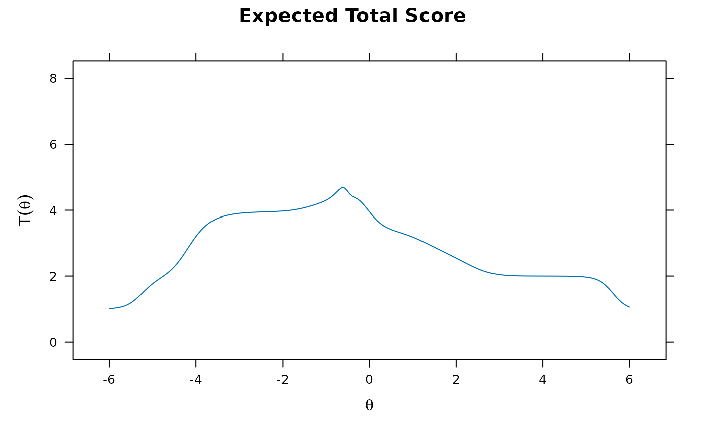
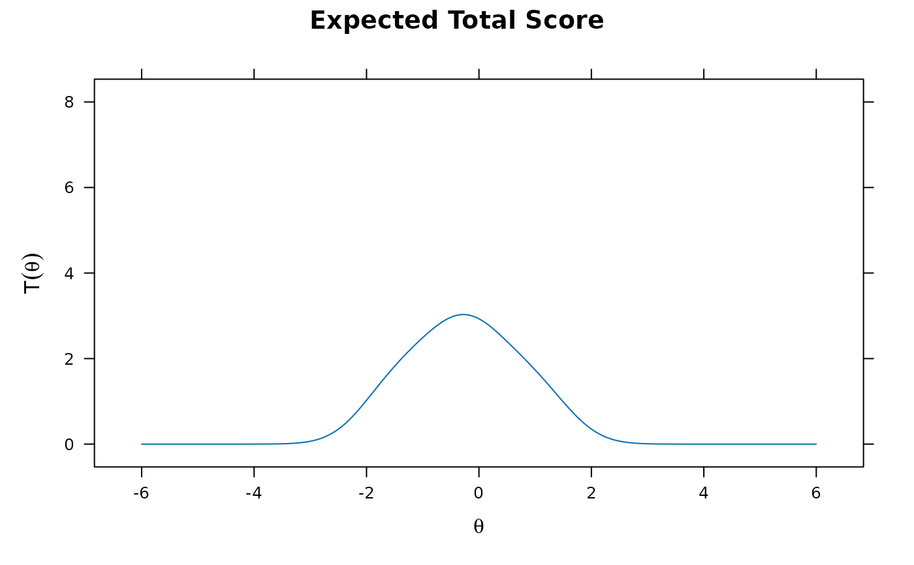
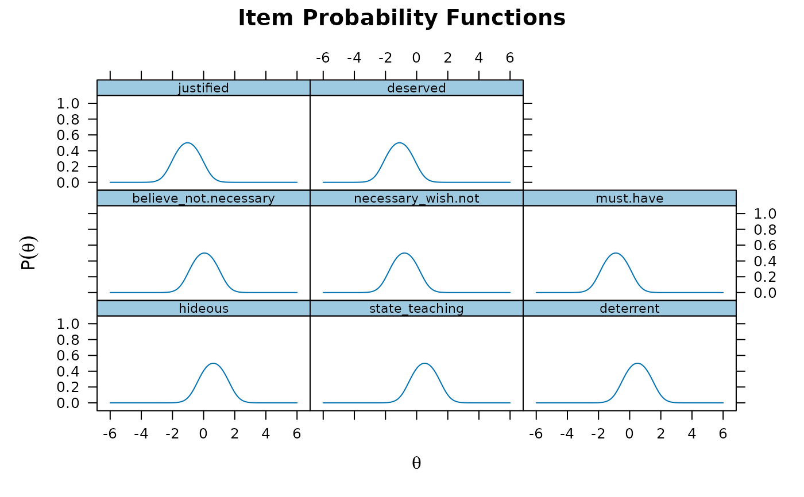
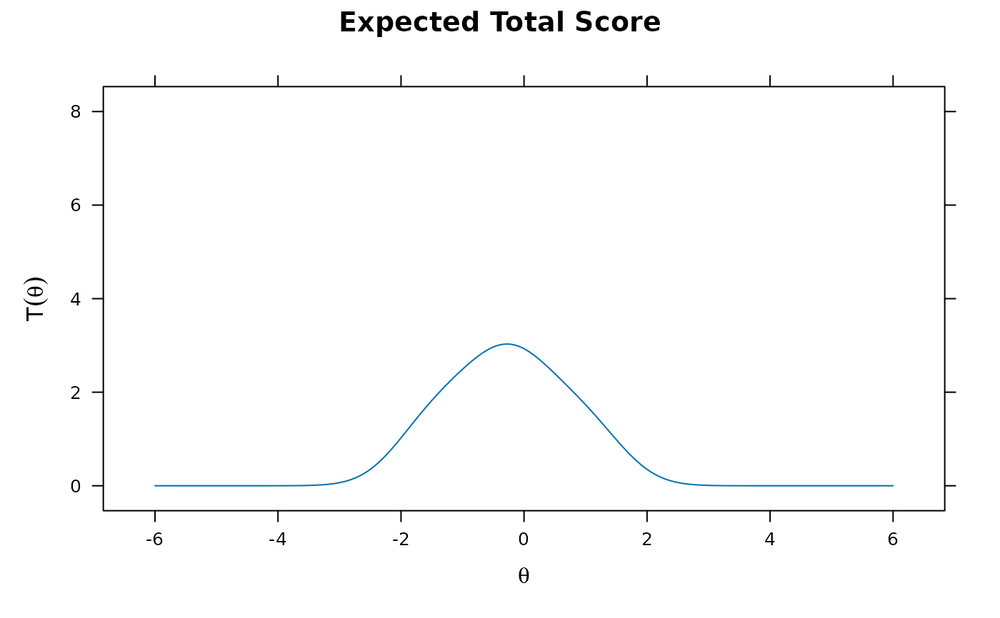
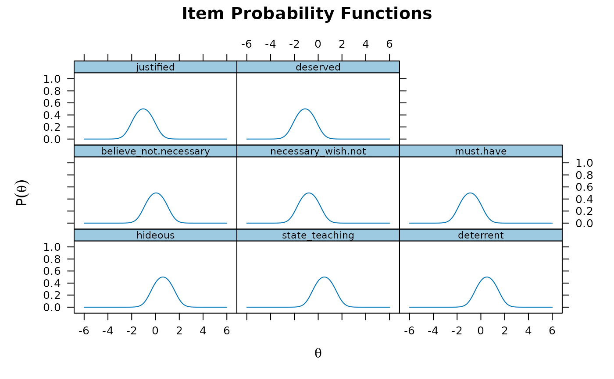

Table of counts extracted from Andrich (1988). Data the response patterns observed for an eight item survey.
Details
The items in this survey were:
Capital punishment is one of the most hideous practices of our time.
The state cannot teach the sacredness of human life by destroying it.
Capital punishment is not an effective deterrent to crime.
I don't believe in capital punishment but I am not sure it isn't necessary.
I think capital punishment is necessary but I wish it were not.
Until we find a more civilized way to prevent crime we must have capital punishment.
Capital punishment is justified because it does act as a deterrent to crime.
Capital punishment gives the criminal what he deserves.
References
Andrich, D. (1988). The Application of an Unfolding Model of the PIRT Type to the Measurement of Attitude. Applied Psychological Measurement, 12, 33-51.
Author
Phil Chalmers rphilip.chalmers@gmail.com
Examples
head(Attitude)
#> hideous state_teaching deterrent believe_not.necessary necessary_wish.not
#> 1 0 1 1 0 0
#> 2 1 1 1 0 0
#> 3 0 1 1 1 0
#> 4 1 1 1 1 0
#> 5 0 1 1 1 1
#> 6 0 1 1 1 0
#> must.have justified deserved freq
#> 1 0 0 0 4
#> 2 0 0 0 10
#> 3 0 0 0 3
#> 4 0 0 0 8
#> 5 0 0 0 1
#> 6 0 1 0 1
df <- expand.table(Attitude)
itemstats(df)
#> $overall
#> N mean_total.score sd_total.score ave.r sd.r alpha SEM.alpha
#> 54 3.852 1.053 -0.064 0.524 -0.849 1.433
#>
#> $itemstats
#> N mean sd total.r total.r_if_rm alpha_if_rm
#> hideous 54 0.444 0.502 0.056 -0.388 -0.340
#> state_teaching 54 0.648 0.482 -0.290 -0.616 -0.046
#> deterrent 54 0.667 0.476 -0.251 -0.587 -0.088
#> believe_not.necessary 54 0.463 0.503 0.523 0.053 -1.260
#> necessary_wish.not 54 0.481 0.504 0.669 0.249 -1.836
#> must.have 54 0.444 0.502 0.591 0.141 -1.499
#> justified 54 0.352 0.482 0.402 -0.061 -0.959
#> deserved 54 0.352 0.482 0.402 -0.061 -0.959
#>
#> $proportions
#> 0 1
#> hideous 0.556 0.444
#> state_teaching 0.352 0.648
#> deterrent 0.333 0.667
#> believe_not.necessary 0.537 0.463
#> necessary_wish.not 0.519 0.481
#> must.have 0.556 0.444
#> justified 0.648 0.352
#> deserved 0.648 0.352
#>
# estimate SSLM with estimated " latitude of acceptance" (rho)
mod.rho <- mirt(df, 1, itemtype = 'sslm')
#>
Iteration: 1, Log-Lik: -319.805, Max-Change: 1.78268
Iteration: 2, Log-Lik: -301.762, Max-Change: 0.65479
Iteration: 3, Log-Lik: -258.818, Max-Change: 1.01406
Iteration: 4, Log-Lik: -213.939, Max-Change: 0.54088
Iteration: 5, Log-Lik: -209.758, Max-Change: 1.09530
Iteration: 6, Log-Lik: -208.751, Max-Change: 1.95408
Iteration: 7, Log-Lik: -564.133, Max-Change: 1.88541
Iteration: 8, Log-Lik: -233.337, Max-Change: 0.64799
Iteration: 9, Log-Lik: -207.614, Max-Change: 0.40081
Iteration: 10, Log-Lik: -201.332, Max-Change: 0.36373
Iteration: 11, Log-Lik: -198.827, Max-Change: 0.41850
Iteration: 12, Log-Lik: -197.618, Max-Change: 0.38744
Iteration: 13, Log-Lik: -213.365, Max-Change: 0.39307
Iteration: 14, Log-Lik: -196.547, Max-Change: 0.19305
Iteration: 15, Log-Lik: -196.327, Max-Change: 0.25796
Iteration: 16, Log-Lik: -196.109, Max-Change: 0.21354
Iteration: 17, Log-Lik: -195.954, Max-Change: 0.20474
Iteration: 18, Log-Lik: -195.869, Max-Change: 0.20037
Iteration: 19, Log-Lik: -196.908, Max-Change: 0.13810
Iteration: 20, Log-Lik: -195.672, Max-Change: 0.11595
Iteration: 21, Log-Lik: -195.608, Max-Change: 0.22423
Iteration: 22, Log-Lik: -195.540, Max-Change: 0.20715
Iteration: 23, Log-Lik: -195.503, Max-Change: 0.20266
Iteration: 24, Log-Lik: -195.474, Max-Change: 0.19460
Iteration: 25, Log-Lik: -196.154, Max-Change: 0.21395
Iteration: 26, Log-Lik: -195.476, Max-Change: 0.23523
Iteration: 27, Log-Lik: -195.436, Max-Change: 0.21219
Iteration: 28, Log-Lik: -195.540, Max-Change: 0.20282
Iteration: 29, Log-Lik: -195.413, Max-Change: 0.00310
Iteration: 30, Log-Lik: -195.400, Max-Change: 0.00813
Iteration: 31, Log-Lik: -195.389, Max-Change: 0.14062
Iteration: 32, Log-Lik: -195.380, Max-Change: 0.11958
Iteration: 33, Log-Lik: -195.372, Max-Change: 0.00747
Iteration: 34, Log-Lik: -195.371, Max-Change: 0.09286
Iteration: 35, Log-Lik: -195.364, Max-Change: 0.00800
Iteration: 36, Log-Lik: -195.358, Max-Change: 0.00709
Iteration: 37, Log-Lik: -195.350, Max-Change: 0.00628
Iteration: 38, Log-Lik: -195.345, Max-Change: 0.00569
Iteration: 39, Log-Lik: -195.341, Max-Change: 0.00143
Iteration: 40, Log-Lik: -195.340, Max-Change: 0.00694
Iteration: 41, Log-Lik: -195.336, Max-Change: 0.00574
Iteration: 42, Log-Lik: -195.333, Max-Change: 0.00132
Iteration: 43, Log-Lik: -195.332, Max-Change: 0.00657
Iteration: 44, Log-Lik: -195.329, Max-Change: 0.06152
Iteration: 45, Log-Lik: -195.326, Max-Change: 0.00127
Iteration: 46, Log-Lik: -195.326, Max-Change: 0.00123
Iteration: 47, Log-Lik: -195.323, Max-Change: 0.00826
Iteration: 48, Log-Lik: -195.320, Max-Change: 0.09696
Iteration: 49, Log-Lik: -195.317, Max-Change: 0.00114
Iteration: 50, Log-Lik: -195.315, Max-Change: 0.11575
Iteration: 51, Log-Lik: -195.312, Max-Change: 0.11979
Iteration: 52, Log-Lik: -195.377, Max-Change: 0.03814
Iteration: 53, Log-Lik: -195.311, Max-Change: 0.07295
Iteration: 54, Log-Lik: -195.306, Max-Change: 0.08876
Iteration: 55, Log-Lik: -195.301, Max-Change: 0.09253
Iteration: 56, Log-Lik: -195.294, Max-Change: 0.09480
Iteration: 57, Log-Lik: -195.291, Max-Change: 0.09577
Iteration: 58, Log-Lik: -195.311, Max-Change: 0.04908
Iteration: 59, Log-Lik: -195.280, Max-Change: 0.06299
Iteration: 60, Log-Lik: -195.275, Max-Change: 0.06788
Iteration: 61, Log-Lik: -195.267, Max-Change: 0.04894
Iteration: 62, Log-Lik: -195.257, Max-Change: 0.01538
Iteration: 63, Log-Lik: -195.254, Max-Change: 0.05226
Iteration: 64, Log-Lik: -195.249, Max-Change: 0.04723
Iteration: 65, Log-Lik: -195.245, Max-Change: 0.04426
Iteration: 66, Log-Lik: -195.242, Max-Change: 0.04123
Iteration: 67, Log-Lik: -195.227, Max-Change: 0.00260
Iteration: 68, Log-Lik: -195.223, Max-Change: 0.00087
Iteration: 69, Log-Lik: -195.221, Max-Change: 0.00714
Iteration: 70, Log-Lik: -195.218, Max-Change: 0.00305
Iteration: 71, Log-Lik: -195.216, Max-Change: 0.00557
Iteration: 72, Log-Lik: -195.213, Max-Change: 0.00218
Iteration: 73, Log-Lik: -195.211, Max-Change: 0.00204
Iteration: 74, Log-Lik: -195.209, Max-Change: 0.00240
Iteration: 75, Log-Lik: -195.206, Max-Change: 0.00099
Iteration: 76, Log-Lik: -195.205, Max-Change: 0.00226
Iteration: 77, Log-Lik: -195.203, Max-Change: 0.00166
Iteration: 78, Log-Lik: -195.201, Max-Change: 0.00103
Iteration: 79, Log-Lik: -195.200, Max-Change: 0.00225
Iteration: 80, Log-Lik: -195.198, Max-Change: 0.00098
Iteration: 81, Log-Lik: -195.196, Max-Change: 0.00245
Iteration: 82, Log-Lik: -195.194, Max-Change: 0.00094
Iteration: 83, Log-Lik: -195.193, Max-Change: 0.00247
Iteration: 84, Log-Lik: -195.191, Max-Change: 0.00091
Iteration: 85, Log-Lik: -195.191, Max-Change: 0.00380
Iteration: 86, Log-Lik: -195.189, Max-Change: 0.02268
Iteration: 87, Log-Lik: -195.188, Max-Change: 0.00081
Iteration: 88, Log-Lik: -195.188, Max-Change: 0.00081
Iteration: 89, Log-Lik: -195.186, Max-Change: 0.00423
Iteration: 90, Log-Lik: -195.185, Max-Change: 0.00083
Iteration: 91, Log-Lik: -195.185, Max-Change: 0.00083
Iteration: 92, Log-Lik: -195.184, Max-Change: 0.00701
Iteration: 93, Log-Lik: -195.183, Max-Change: 0.03633
Iteration: 94, Log-Lik: -195.181, Max-Change: 0.00068
Iteration: 95, Log-Lik: -195.180, Max-Change: 0.03779
Iteration: 96, Log-Lik: -195.179, Max-Change: 0.00068
Iteration: 97, Log-Lik: -195.179, Max-Change: 0.00068
Iteration: 98, Log-Lik: -195.178, Max-Change: 0.04159
Iteration: 99, Log-Lik: -195.177, Max-Change: 0.00065
Iteration: 100, Log-Lik: -195.177, Max-Change: 0.00065
Iteration: 101, Log-Lik: -195.176, Max-Change: 0.04451
Iteration: 102, Log-Lik: -195.175, Max-Change: 0.00062
Iteration: 103, Log-Lik: -195.175, Max-Change: 0.00062
Iteration: 104, Log-Lik: -195.175, Max-Change: 0.04743
Iteration: 105, Log-Lik: -195.174, Max-Change: 0.00059
Iteration: 106, Log-Lik: -195.174, Max-Change: 0.00059
Iteration: 107, Log-Lik: -195.173, Max-Change: 0.05033
Iteration: 108, Log-Lik: -195.172, Max-Change: 0.00057
Iteration: 109, Log-Lik: -195.172, Max-Change: 0.00057
Iteration: 110, Log-Lik: -195.172, Max-Change: 0.00057
Iteration: 111, Log-Lik: -195.171, Max-Change: 0.00057
Iteration: 112, Log-Lik: -195.169, Max-Change: 0.07218
Iteration: 113, Log-Lik: -195.168, Max-Change: 0.00044
Iteration: 114, Log-Lik: -195.168, Max-Change: 0.00024
Iteration: 115, Log-Lik: -195.167, Max-Change: 0.07284
Iteration: 116, Log-Lik: -195.166, Max-Change: 0.00042
Iteration: 117, Log-Lik: -195.166, Max-Change: 0.00024
Iteration: 118, Log-Lik: -195.166, Max-Change: 0.00049
Iteration: 119, Log-Lik: -195.166, Max-Change: 0.00022
Iteration: 120, Log-Lik: -195.166, Max-Change: 0.07769
Iteration: 121, Log-Lik: -195.165, Max-Change: 0.00019
Iteration: 122, Log-Lik: -195.165, Max-Change: 0.00050
Iteration: 123, Log-Lik: -195.165, Max-Change: 0.00020
Iteration: 124, Log-Lik: -195.165, Max-Change: 0.00016
Iteration: 125, Log-Lik: -195.164, Max-Change: 0.08081
Iteration: 126, Log-Lik: -195.164, Max-Change: 0.00017
Iteration: 127, Log-Lik: -195.164, Max-Change: 0.00017
Iteration: 128, Log-Lik: -195.164, Max-Change: 0.00047
Iteration: 129, Log-Lik: -195.163, Max-Change: 0.00018
Iteration: 130, Log-Lik: -195.163, Max-Change: 0.00014
Iteration: 131, Log-Lik: -195.163, Max-Change: 0.00033
Iteration: 132, Log-Lik: -195.163, Max-Change: 0.00014
Iteration: 133, Log-Lik: -195.163, Max-Change: 0.00030
Iteration: 134, Log-Lik: -195.163, Max-Change: 0.00015
Iteration: 135, Log-Lik: -195.163, Max-Change: 0.00031
Iteration: 136, Log-Lik: -195.163, Max-Change: 0.00017
Iteration: 137, Log-Lik: -195.163, Max-Change: 0.00009
coef(mod.rho)
#> $hideous
#> a1 d log_rho1
#> par 1 -0.929 0.089
#>
#> $state_teaching
#> a1 d log_rho1
#> par 1 -3.072 1.274
#>
#> $deterrent
#> a1 d log_rho1
#> par 1 -2.529 1.124
#>
#> $believe_not.necessary
#> a1 d log_rho1
#> par 1 -0.012 -0.236
#>
#> $necessary_wish.not
#> a1 d log_rho1
#> par 1 2.101 0.703
#>
#> $must.have
#> a1 d log_rho1
#> par 1 2.719 0.915
#>
#> $justified
#> a1 d log_rho1
#> par 1 2.278 0.605
#>
#> $deserved
#> a1 d log_rho1
#> par 1 8.142 2.032
#>
#> $GroupPars
#> MEAN_1 COV_11
#> par 0 1
#>
coef(mod.rho, simplify=TRUE) # slope-intercept-log_rho
#> $items
#> a1 d log_rho1
#> hideous 1 -0.929 0.089
#> state_teaching 1 -3.072 1.274
#> deterrent 1 -2.529 1.124
#> believe_not.necessary 1 -0.012 -0.236
#> necessary_wish.not 1 2.101 0.703
#> must.have 1 2.719 0.915
#> justified 1 2.278 0.605
#> deserved 1 8.142 2.032
#>
#> $means
#> F1
#> 0
#>
#> $cov
#> F1
#> F1 1
#>
coef(mod.rho, simplify=TRUE, IRTpars=TRUE) # discrimination-difficulty-rho
#> $items
#> a b rho1
#> hideous 1 0.929 1.093
#> state_teaching 1 3.072 3.575
#> deterrent 1 2.529 3.076
#> believe_not.necessary 1 0.012 0.790
#> necessary_wish.not 1 -2.101 2.020
#> must.have 1 -2.719 2.497
#> justified 1 -2.278 1.830
#> deserved 1 -8.142 7.629
#>
#> $means
#> F1
#> 0
#>
#> $cov
#> F1
#> F1 1
#>
plot(mod.rho)

plot(mod.rho, type = 'trace')
 # without estimating rho, and fixing to rho^2 = 1 (hence,
# log_rho = -exp(1) = -2.718282 in order to obtain (exp(exp(log_rho))) = 1)
syntax <- "Theta = 1-8
FIXED = (1-8, log_rho1)
START = (1-8, log_rho1, -2.71828)"
mod <- mirt(df, syntax, itemtype = 'sslm') # model found in Andrich (1988)
#>
Iteration: 1, Log-Lik: -322.888, Max-Change: 0.18721
Iteration: 2, Log-Lik: -318.400, Max-Change: 0.34113
Iteration: 3, Log-Lik: -300.301, Max-Change: 0.38948
Iteration: 4, Log-Lik: -284.638, Max-Change: 0.12308
Iteration: 5, Log-Lik: -283.036, Max-Change: 0.03642
Iteration: 6, Log-Lik: -282.880, Max-Change: 0.02003
Iteration: 7, Log-Lik: -282.783, Max-Change: 0.01399
Iteration: 8, Log-Lik: -282.728, Max-Change: 0.01199
Iteration: 9, Log-Lik: -282.687, Max-Change: 0.01031
Iteration: 10, Log-Lik: -282.573, Max-Change: 0.00194
Iteration: 11, Log-Lik: -282.572, Max-Change: 0.00184
Iteration: 12, Log-Lik: -282.571, Max-Change: 0.00145
Iteration: 13, Log-Lik: -282.570, Max-Change: 0.00129
Iteration: 14, Log-Lik: -282.570, Max-Change: 0.00094
Iteration: 15, Log-Lik: -282.570, Max-Change: 0.00074
Iteration: 16, Log-Lik: -282.569, Max-Change: 0.00042
Iteration: 17, Log-Lik: -282.569, Max-Change: 0.00053
Iteration: 18, Log-Lik: -282.569, Max-Change: 0.00028
Iteration: 19, Log-Lik: -282.569, Max-Change: 0.00031
Iteration: 20, Log-Lik: -282.569, Max-Change: 0.00018
Iteration: 21, Log-Lik: -282.569, Max-Change: 0.00021
Iteration: 22, Log-Lik: -282.569, Max-Change: 0.00011
Iteration: 23, Log-Lik: -282.569, Max-Change: 0.00004
coef(mod)
#> $hideous
#> a1 d log_rho1
#> par 1 -0.622 -2.718
#>
#> $state_teaching
#> a1 d log_rho1
#> par 1 -0.517 -2.718
#>
#> $deterrent
#> a1 d log_rho1
#> par 1 -0.504 -2.718
#>
#> $believe_not.necessary
#> a1 d log_rho1
#> par 1 -0.05 -2.718
#>
#> $necessary_wish.not
#> a1 d log_rho1
#> par 1 0.783 -2.718
#>
#> $must.have
#> a1 d log_rho1
#> par 1 0.893 -2.718
#>
#> $justified
#> a1 d log_rho1
#> par 1 1.031 -2.718
#>
#> $deserved
#> a1 d log_rho1
#> par 1 1.099 -2.718
#>
#> $GroupPars
#> MEAN_1 COV_11
#> par 0 1
#>
coef(mod, simplify=TRUE) # slope-intercept-log_rho
#> $items
#> a1 d log_rho1
#> hideous 1 -0.622 -2.718
#> state_teaching 1 -0.517 -2.718
#> deterrent 1 -0.504 -2.718
#> believe_not.necessary 1 -0.050 -2.718
#> necessary_wish.not 1 0.783 -2.718
#> must.have 1 0.893 -2.718
#> justified 1 1.031 -2.718
#> deserved 1 1.099 -2.718
#>
#> $means
#> Theta
#> 0
#>
#> $cov
#> Theta
#> Theta 1
#>
coef(mod, simplify=TRUE, IRTpars=TRUE) # discrimination-difficulty-rho
#> $items
#> a b rho1
#> hideous 1 0.622 0.066
#> state_teaching 1 0.517 0.066
#> deterrent 1 0.504 0.066
#> believe_not.necessary 1 0.050 0.066
#> necessary_wish.not 1 -0.783 0.066
#> must.have 1 -0.893 0.066
#> justified 1 -1.031 0.066
#> deserved 1 -1.099 0.066
#>
#> $means
#> Theta
#> 0
#>
#> $cov
#> Theta
#> Theta 1
#>
plot(mod)

plot(mod, type = 'trace') # notice that all curves have a fixed height of .5

# goodness of fit (less constrained model fits better)
anova(mod, mod.rho) # original model fits much worse
#> AIC SABIC HQ BIC logLik X2 df p
#> mod 581.139 571.917 587.275 597.051 -282.569
#> mod.rho 422.326 403.882 434.599 454.149 -195.163 174.813 8 0
M2(mod)
#> M2 df p RMSEA RMSEA_5 RMSEA_95 SRMSR TLI CFI
#> stats 271.0979 28 0 0.4047377 0.3582323 0.4451614 0.423321 0.3590415 0.3590415
M2(mod.rho)
#> M2 df p RMSEA RMSEA_5 RMSEA_95 SRMSR TLI
#> stats 34.70944 20 0.02170751 0.1178 0.04456401 0.180314 0.07963288 0.9457034
#> CFI
#> stats 0.9612167
itemfit(mod, p.adjust='fdr')
#> item S_X2 df.S_X2 RMSEA.S_X2 p.S_X2
#> 1 hideous 9.192 4 0.156 0.075
#> 2 state_teaching 37.649 4 0.398 0.000
#> 3 deterrent 23.743 4 0.305 0.000
#> 4 believe_not.necessary 6.454 3 0.147 0.105
#> 5 necessary_wish.not 14.371 3 0.267 0.007
#> 6 must.have 8.953 3 0.193 0.048
#> 7 justified 4.967 4 0.068 0.291
#> 8 deserved 11.061 3 0.225 0.023
itemfit(mod.rho, p.adjust='fdr')
#> item S_X2 df.S_X2 RMSEA.S_X2 p.S_X2
#> 1 hideous 0.893 2 0.000 0.640
#> 2 state_teaching 12.861 2 0.320 0.013
#> 3 deterrent 1.824 1 0.125 0.301
#> 4 believe_not.necessary 0.310 1 0.000 0.640
#> 5 necessary_wish.not 2.816 1 0.185 0.249
#> 6 must.have 1.465 1 0.094 0.301
#> 7 justified 1.494 1 0.097 0.301
#> 8 deserved 6.713 2 0.211 0.139
# without estimating rho, and fixing to rho^2 = 1 (hence,
# log_rho = -exp(1) = -2.718282 in order to obtain (exp(exp(log_rho))) = 1)
syntax <- "Theta = 1-8
FIXED = (1-8, log_rho1)
START = (1-8, log_rho1, -2.71828)"
mod <- mirt(df, syntax, itemtype = 'sslm') # model found in Andrich (1988)
#>
Iteration: 1, Log-Lik: -322.888, Max-Change: 0.18721
Iteration: 2, Log-Lik: -318.400, Max-Change: 0.34113
Iteration: 3, Log-Lik: -300.301, Max-Change: 0.38948
Iteration: 4, Log-Lik: -284.638, Max-Change: 0.12308
Iteration: 5, Log-Lik: -283.036, Max-Change: 0.03642
Iteration: 6, Log-Lik: -282.880, Max-Change: 0.02003
Iteration: 7, Log-Lik: -282.783, Max-Change: 0.01399
Iteration: 8, Log-Lik: -282.728, Max-Change: 0.01199
Iteration: 9, Log-Lik: -282.687, Max-Change: 0.01031
Iteration: 10, Log-Lik: -282.573, Max-Change: 0.00194
Iteration: 11, Log-Lik: -282.572, Max-Change: 0.00184
Iteration: 12, Log-Lik: -282.571, Max-Change: 0.00145
Iteration: 13, Log-Lik: -282.570, Max-Change: 0.00129
Iteration: 14, Log-Lik: -282.570, Max-Change: 0.00094
Iteration: 15, Log-Lik: -282.570, Max-Change: 0.00074
Iteration: 16, Log-Lik: -282.569, Max-Change: 0.00042
Iteration: 17, Log-Lik: -282.569, Max-Change: 0.00053
Iteration: 18, Log-Lik: -282.569, Max-Change: 0.00028
Iteration: 19, Log-Lik: -282.569, Max-Change: 0.00031
Iteration: 20, Log-Lik: -282.569, Max-Change: 0.00018
Iteration: 21, Log-Lik: -282.569, Max-Change: 0.00021
Iteration: 22, Log-Lik: -282.569, Max-Change: 0.00011
Iteration: 23, Log-Lik: -282.569, Max-Change: 0.00004
coef(mod)
#> $hideous
#> a1 d log_rho1
#> par 1 -0.622 -2.718
#>
#> $state_teaching
#> a1 d log_rho1
#> par 1 -0.517 -2.718
#>
#> $deterrent
#> a1 d log_rho1
#> par 1 -0.504 -2.718
#>
#> $believe_not.necessary
#> a1 d log_rho1
#> par 1 -0.05 -2.718
#>
#> $necessary_wish.not
#> a1 d log_rho1
#> par 1 0.783 -2.718
#>
#> $must.have
#> a1 d log_rho1
#> par 1 0.893 -2.718
#>
#> $justified
#> a1 d log_rho1
#> par 1 1.031 -2.718
#>
#> $deserved
#> a1 d log_rho1
#> par 1 1.099 -2.718
#>
#> $GroupPars
#> MEAN_1 COV_11
#> par 0 1
#>
coef(mod, simplify=TRUE) # slope-intercept-log_rho
#> $items
#> a1 d log_rho1
#> hideous 1 -0.622 -2.718
#> state_teaching 1 -0.517 -2.718
#> deterrent 1 -0.504 -2.718
#> believe_not.necessary 1 -0.050 -2.718
#> necessary_wish.not 1 0.783 -2.718
#> must.have 1 0.893 -2.718
#> justified 1 1.031 -2.718
#> deserved 1 1.099 -2.718
#>
#> $means
#> Theta
#> 0
#>
#> $cov
#> Theta
#> Theta 1
#>
coef(mod, simplify=TRUE, IRTpars=TRUE) # discrimination-difficulty-rho
#> $items
#> a b rho1
#> hideous 1 0.622 0.066
#> state_teaching 1 0.517 0.066
#> deterrent 1 0.504 0.066
#> believe_not.necessary 1 0.050 0.066
#> necessary_wish.not 1 -0.783 0.066
#> must.have 1 -0.893 0.066
#> justified 1 -1.031 0.066
#> deserved 1 -1.099 0.066
#>
#> $means
#> Theta
#> 0
#>
#> $cov
#> Theta
#> Theta 1
#>
plot(mod)

plot(mod, type = 'trace') # notice that all curves have a fixed height of .5

# goodness of fit (less constrained model fits better)
anova(mod, mod.rho) # original model fits much worse
#> AIC SABIC HQ BIC logLik X2 df p
#> mod 581.139 571.917 587.275 597.051 -282.569
#> mod.rho 422.326 403.882 434.599 454.149 -195.163 174.813 8 0
M2(mod)
#> M2 df p RMSEA RMSEA_5 RMSEA_95 SRMSR TLI CFI
#> stats 271.0979 28 0 0.4047377 0.3582323 0.4451614 0.423321 0.3590415 0.3590415
M2(mod.rho)
#> M2 df p RMSEA RMSEA_5 RMSEA_95 SRMSR TLI
#> stats 34.70944 20 0.02170751 0.1178 0.04456401 0.180314 0.07963288 0.9457034
#> CFI
#> stats 0.9612167
itemfit(mod, p.adjust='fdr')
#> item S_X2 df.S_X2 RMSEA.S_X2 p.S_X2
#> 1 hideous 9.192 4 0.156 0.075
#> 2 state_teaching 37.649 4 0.398 0.000
#> 3 deterrent 23.743 4 0.305 0.000
#> 4 believe_not.necessary 6.454 3 0.147 0.105
#> 5 necessary_wish.not 14.371 3 0.267 0.007
#> 6 must.have 8.953 3 0.193 0.048
#> 7 justified 4.967 4 0.068 0.291
#> 8 deserved 11.061 3 0.225 0.023
itemfit(mod.rho, p.adjust='fdr')
#> item S_X2 df.S_X2 RMSEA.S_X2 p.S_X2
#> 1 hideous 0.893 2 0.000 0.640
#> 2 state_teaching 12.861 2 0.320 0.013
#> 3 deterrent 1.824 1 0.125 0.301
#> 4 believe_not.necessary 0.310 1 0.000 0.640
#> 5 necessary_wish.not 2.816 1 0.185 0.249
#> 6 must.have 1.465 1 0.094 0.301
#> 7 justified 1.494 1 0.097 0.301
#> 8 deserved 6.713 2 0.211 0.139